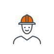
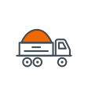
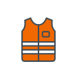

- Etusivu
- Yhteystiedot
Yhteystiedot
Valitse asiasi, niin ohjaamme sinut oikealle ihmiselle.
Mitä asiaa sinulla on?
Uusi hanke tai tarjouspyyntö
Lähetä hankkeen tiedot ja asiakirjat, niin palvelun asiantuntija ottaa yhteyttä.

Kysy palvelun asiantuntijalta
Liiketoimintojen vastuuhenkilöt vastaavat suoraan, myös jo suunnitteluvaiheessa.

Tuon maa-aineksia
20 vastaanottopaikkaa eri puolilla Suomea.
Laskutus ja toimittajat
Verkkolaskuosoitteet, laskun pakolliset tiedot ja toimittajien yritysvastuuvaatimukset.

Työpaikat
Haettavat paikat, kesätyöt ja avoin hakemus Suomessa, Ruotsissa ja Virossa.
Media
Haastattelut, kuvat, logot ja tiedotteet.
Hae yhteyshenkilöä
Hae nimellä, palvelulla tai paikkakunnalla, tai rajaa palvelun, aiheen ja alueen mukaan.
Liiketoimintojen vastuuhenkilöt 6
Jaakko Mäkelä
Liiketoimintajohtaja, taito- ja väylärakentaminen sekä päällystys
Anneliina Kupiainen
Liiketoimintajohtaja, ympäristöteknologia
GRK Suomessa, Ruotsissa ja Virossa
GRK Sverige AB
Teknikvägen 13, 961 50 Boden
Carl Andersson, VD
+46 70 384 00 99
Toimipisteet
Pääkonttorit ja suurimmat toimipisteet Suomessa, Ruotsissa ja Virossa. Vastaanottopaikat omana ryhmänään alempana.
Suomi · Pääkonttori
Suomi
Suomi
Suomi
Ruotsi · Pääkonttori
Ruotsi
Viro
Viro
Vastaanottopaikat
Maa-ainesten ja teollisuuden sivuvirtojen vastaanotto 20 paikassa eri puolilla Suomea. Jakeet, aukioloajat ja yhteystiedot paikkakunnittain.
Katso vastaanottopaikatLaskutustiedot
Rakentamisen laskut GRK Suomi Oy:lle. Ostolaskut: ostoreskontra@grk.fi · Myyntilaskut: myyntilaskut@grk.fi
- Yritys
- GRK Suomi OyY-tunnus 2810844-3
- Verkkolaskuosoite (OVT)
- 003728108443
- Operaattori
- Maventa, 003721291126Pankkiverkosta: Danske Bank, DABAFIHH
- PDF-laskut
- invoice-28108443@kollektor.fiLasku ja liitteet yhtenä tiedostona
- Paperilaskut
- GRK Suomi Oy, 28108443, PL 100, 80020 Kollektor Scan
- Laskussa on oltava
- Työnumero ja alanumero (esim. 120000/1600), tilaajan nimi ja työn ajankohtaPuutteellinen lasku palautetaan
Kaikki laskutustiedot, myös GRK Infra Oyj, GRK Sverige AB ja GRK Eesti AS
Etkö löytänyt oikeaa ihmistä?
Kerro asiasi, niin välitämme viestisi perille.
Töihin GRK:lle
Infra on kasvuala, ja työn jälki näkyy pitkään. Meillä saa vastuuta niin paljon kuin uskaltaa ottaa.